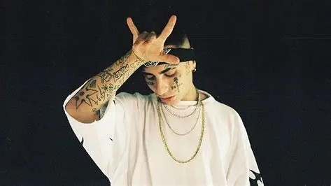
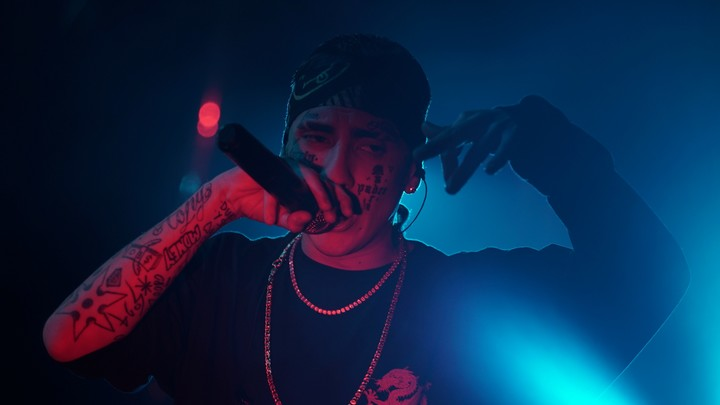

Introducción
Neo Pistea es uno de los integrantes originales de Modo Diablo y una de las figuras más representativas del sonido trapero más crudo y callejero de Argentina. Su voz grave, su actitud directa y su estética oscura lo diferencian claramente dentro de la escena urbana.

A lo largo de su carrera, Neo Pistea ha mantenido su identidad underground, fiel al espíritu con el que comenzó el trap. Mientras otros artistas se acercaban a sonidos más comerciales, él conservó un estilo agresivo y auténtico. Gracias a esto, se convirtió en un referente para quienes buscan un sonido duro, realista y cercano a la vida del barrio.
Plataformas

Datos personales
| Nombre completo | Sebastián Ezequiel Chinellato |
|---|---|
| Nombre artístico | Neo Pistea |
| Fecha de nacimiento | 5 de octubre de 1994 |
| Lugar de nacimiento | Buenos Aires, Argentina |
| Profesión | Rapero y compositor |
| Géneros | Trap, rap, hip hop |
Primeros años
Durante su adolescencia se interesó por el rap y la cultura urbana. Escuchaba tanto hip hop clásico como los primeros exponentes del trap estadounidense. Inspirado por ese sonido moderno y minimalista, comenzó a escribir letras que reflejaban su entorno, sus experiencias personales y la vida cotidiana del barrio.
Sus primeras grabaciones se realizaron en estudios caseros, con pocos recursos técnicos, pero con mucha creatividad. Esta forma artesanal de producir música sería una característica constante en su carrera.
Primeros pasos en la música
Antes de alcanzar la fama, Neo Pistea colaboraba con otros artistas emergentes de Buenos Aires. Subía canciones a internet y participaba en pequeños eventos locales. Poco a poco comenzó a hacerse conocido dentro del circuito underground.
Su estilo serio, su tono grave y su actitud desafiante llamaron la atención rápidamente, diferenciándolo de otros raperos más melódicos.

Etapa en Modo Diablo
El gran salto en su carrera llegó cuando se unió a Duki y YSY A para formar Modo Diablo. El trío encontró una química especial: cada uno tenía un estilo diferente que encajaba perfectamente con los demás.
Neo Pistea aportaba el lado más oscuro y callejero del grupo. Sus versos eran directos, crudos y contundentes, reforzando la identidad trapera del colectivo.
Durante esta etapa grabaron numerosas canciones en la casa de Antezana 247, conocida como “La Cuna del Trap”, donde convivían y producían música casi todos los días.
Carrera en solitario
Tras la separación del grupo, Neo Pistea continuó desarrollando su propio camino artístico. Publicó singles, mixtapes y colaboraciones, manteniendo siempre su estilo característico.
Se consolidó como uno de los referentes del trap más puro, priorizando la autenticidad sobre el éxito comercial. Esto le permitió conservar una base de seguidores muy fiel.
Estilo musical y lírico
Su música se apoya en bases pesadas con bajos 808 profundos, hi-hats rápidos y atmósferas oscuras. Su voz grave encaja perfectamente con este tipo de producción, generando una sensación intensa y agresiva.
Las letras suelen hablar de la vida en la calle, la superación personal, el esfuerzo, la amistad y la realidad del barrio. A diferencia de otros artistas más melódicos, Neo Pistea mantiene un tono directo y realista.
- Voz grave y rasgada
- Flows lentos y contundentes
- Estética urbana oscura
- Temáticas callejeras
Discografía destacada
| Año | Proyecto | Tipo |
|---|---|---|
| 2018 | Cultura | Mixtape |
| 2019 | Singles varios | Sencillos |
| 2020 | Colaboraciones con artistas urbanos | Colaboraciones |
| 2022 | Nuevos lanzamientos digitales | EP |
Curiosidades
- Es considerado el integrante más “trapero” de Modo Diablo.
- Mantiene una estética urbana muy marcada en videoclips y conciertos.
- Prefiere estudios caseros y grabaciones independientes.
- Su estilo ha influido en muchos artistas nuevos del underground.
Impacto cultural y legado
Aunque su perfil mediático es más discreto que el de otros compañeros, su influencia dentro de la escena es enorme. Representa la esencia original del trap argentino: independencia, crudeza y autenticidad.
Muchos artistas jóvenes lo consideran una referencia por mantenerse fiel a sus raíces y no modificar su estilo para adaptarse a las modas comerciales.
Gracias a su trabajo, el sonido más oscuro y callejero sigue teniendo un espacio importante dentro del panorama urbano argentino.